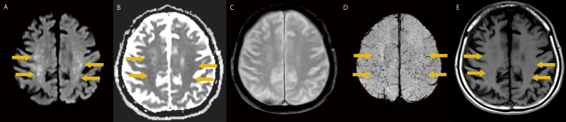
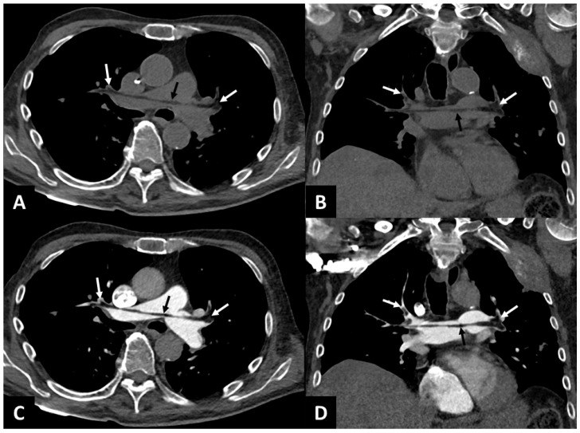
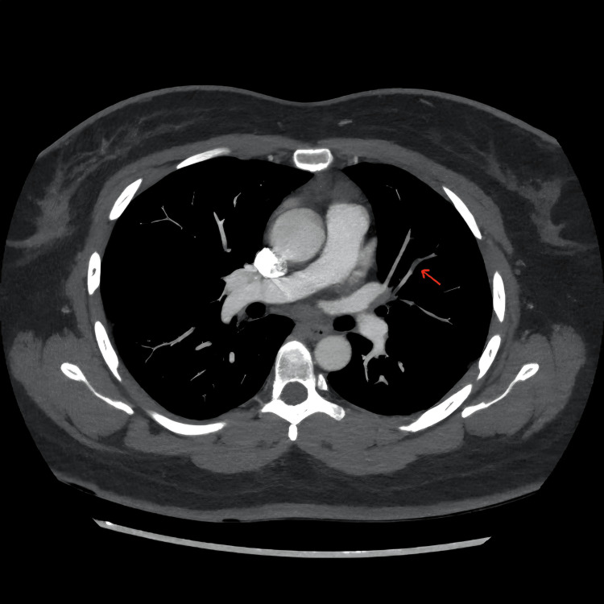

1800 — Tắc mạch mỡ (fat embolism syndrome, FES) sau chấn thương và sau hút mỡ – ghép mỡ mông
Tags: pattern:mo-kinh-lan-toa pattern:starfield pattern:han-che-khuếch-tan pattern:tac-mach pattern:xuat-huyet-diem vung:phoi vung:nao vung:mo-mem protocol:CT-nguc-khong-can-quang protocol:CTA-phoi protocol:MRI-so-nao-DWI score:Gurd-Wilson
Mức chắc chắn (certainty): tổng hợp y văn (literature synthesis) — ghép 1 đoàn hệ 3.475 ca gãy xương dài (Eur J Trauma Emerg Surg 2026, PMC13046669, CC BY-NC-ND), 1 tổng quan (Trauma Surg Acute Care Open 2026, PMC13311676, CC BY-NC), 1 ca tắc mạch mỡ động mạch phổi đo đậm độ −50 đến −97 HU (Diagnostics 2025, PMC12523309, CC BY 4.0), 1 ca FES ưu thế thần kinh có "starfield" (BMC Neurol 2026, PMC13019804, CC BY 4.0) và 1 ca sau hút mỡ (Cureus 2026, PMC13227903, CC BY 4.0). Số nào nguồn không đưa thì ghi "chưa rõ".
Bài này trả lời 4 câu hỏi của ca "khó thở/rối loạn tri giác sau chấn thương hoặc sau hút mỡ": (1) Vì sao mỡ lại thấy được trên CT và MRI — và tại sao phải chụp KHÔNG cản quang? (2) Tam chứng Gurd thiếu một chân thì còn chẩn đoán được không? (3) Phân biệt với tắc mạch silicone (SES), thuyên tắc phổi (PE), ARDS nhiễm trùng và tổn thương sợi trục lan tỏa (DAI) bằng gì? (4) Điều trị nào thực sự đổi tiên lượng? Đây là bài riêng của FES; 1698 – SES sau tiêm silicone mông phủ thể silicone lỏng, khác nguồn và khác đậm độ; 098 phủ khí ngoài phế nang.
1. Tổng quan bệnh học – cơ chế hình ảnh
1.1 Mỡ vào tuần hoàn bằng đường nào
- Gãy xương dài/khung chậu: tủy xương chứa mỡ và xoang tĩnh mạch; ổ gãy làm rách tĩnh mạch tủy → giọt mỡ tự thân vào tĩnh mạch → tim phải → mao mạch phổi. Giọt mỡ lớn hơn mao mạch (~7–10 µm) nên bít cơ học, sau đó lipase thủy phân triglycerid thành acid béo tự do → độc tế bào nội mô, hoạt hóa bạch cầu → phù và mờ kính hai bên.
- Hút mỡ/ghép mỡ mông (liposuction, fat grafting): đầu cannula đưa vào mô mỡ dưới da — nơi có đám rối tĩnh mạch; mỡ bị bơm/hút dưới áp lực có thể vào thẳng tĩnh mạch. Đây là đường vào hoàn toàn ngoài xương, nên không có gãy xương vẫn có FES (ca Cureus 2026, PMC13227903).
- Vì sao có dạng "ưu thế thần kinh" không khó thở: một phần vi giọt mỡ qua shunt phải–trái (PFO) hoặc qua giường mao mạch phổi bị vượt → vào tuần hoàn hệ thống → vi nhồi máu não. Ca PMC13019804: bệnh nhân 82 tuổi, chỉ rối loạn tri giác tiến triển, không triệu chứng hô hấp, MRI mới lộ "starfield".
- Thời điểm: điển hình 24–72 giờ sau chấn thương; thể sau hút mỡ có thể rất sớm, trong vài giờ đầu (PMC13227903 mô tả khởi phát sớm bất thường).
1.2 TẠI SAO mỡ "nhìn thấy được" trên CT — con số quyết định
- Trên CT không cản quang, mỡ có đậm độ âm: ca PMC12523309 đo trong lòng động mạch phổi −50 HU (ROI 5 mm²), nhánh phải −84 HU (ROI 10 mm²), nhánh trái −97 HU (ROI 21 mm²), các nhánh thùy trên −95 HU. Đây là khuyết thuốc "âm" — không phải huyết khối (thường dương, khoảng +30 đến +50 HU).
- Trên CTPA (có cản quang), iod trộn vào làm mỡ gần như đồng đậm với máu, nên giọt mỡ chỉ còn hiện là khuyết thuốc mềm — dễ bỏ hoặc gọi nhầm là PE. Vì vậy luôn giữ thì không cản quang khi nghi FES; đó là điểm "chốt" của bài.
- Phổi: mờ kính hai bên, đối xứng, có thể "bão tuyết" (snowstorm); đông đặc phụ thuộc ở thể nặng; không có bít tắc động mạch phổi lớn.
- Não: vi nhồi máu → phù tế bào → hạn chế khuếch tán (DWI sáng, ADC tối) thành nhiều nốt nhỏ rải rác ở chất trắng, thể chai, nhân xám trung ương, tiểu não — mẫu hình "starfield" (bầu trời sao). SWI thấy vi xuất huyết (đốm tối) và nhạy hơn DWI trong thể muộn; ca PMC13019804 ghi rõ "imaging–clinical dissociation": MRI nặng lên trong khi bệnh nhân cải thiện.
1.3 Con số phải nhớ
- Trong 3.475 ca gãy xương dài: FES 4,3% (148 ca), tử vong trong viện 5,4%; gãy xương đùi là yếu tố nguy cơ mạnh nhất (aOR 4,63; KTC 95% 2,99–7,22); béo phì aOR 2,63 (1,33–4,93); cố định xương sớm < 24 giờ bảo vệ (aOR 0,42; 0,25–0,71); 93,9% ca FES cần hỗ trợ thông khí nâng cao (PMC13046669).
- 5% bệnh nhân chấn thương năng lượng cao (gãy chậu/đùi) có tắc mạch mỡ não trên MRI dù không thành "hội chứng" đầy đủ (PMC13311676).
- Tối đa 44% ca FES cần thông khí xâm nhập; ECMO là cứu cánh trong ARDS nặng (PMC13311676).
2. Mẫu hình + chẩn đoán phân biệt theo vị trí (Gamut)
2.1 Gamut theo đường vào
- Sau gãy xương dài/khung chậu (thường nhất): gãy đùi, gãy nhiều xương, đóng đinh tủy.
- Sau thủ thuật thẩm mỹ: hút mỡ, ghép mỡ mông (BBL), bơm mỡ tự thân; không có gãy xương.
- Không do chấn thương: thiếu máu hồng cầu hình liềm (hoại tử tủy), viêm tụy cấp, hoại tử tủy do steroid, truyền lipid, ghép tủy.
2.2 Gamut theo cơ quan — "ba tầng" của FES
- Phổi (sớm nhất): mờ kính hai bên → đông đặc; giảm oxy máu; khuyết thuốc mỡ trong động mạch phổi trên CT không cản quang.
- Não (muộn hơn, tiên lượng): "starfield" trên DWI, vi xuất huyết trên SWI, hôn mê/co giật; có thể đơn độc.
- Da – mắt – thận: ban xuất huyết điểm vùng cổ/ngực/nách (tiêu chuẩn chính), đốm Purtscher ở võng mạc, mỡ trong nước tiểu.
3. Bảng so sánh phân biệt (ma trận đối chiếu)
| Thực thể (entity) | Hình ảnh điển hình | Chốt vào (rule-in) | Chốt loại (rule-out) | Gợi ý xác nhận |
|---|---|---|---|---|
| Tắc mạch mỡ (FES) | CT không cản quang: khuyết thuốc âm −50 đến −97 HU trong động mạch phổi; phổi mờ kính hai bên; MRI não starfield (DWI sáng/ADC tối, SWI vi xuất huyết) | Bối cảnh gãy xương dài/hút mỡ + giảm oxy + rối loạn tri giác ± ban điểm; đậm độ mỡ trong lòng mạch trên CT không cản quang | Khuyết thuốc dương + không có nguồn mỡ → PE; tiêm silicone → SES; mờ phổi một thùy + sốt mủ → viêm phổi | Gurd–Wilson (≥ 2 chính hoặc 1 chính + 4 phụ); Schonfeld > 5 điểm; MRI DWI + SWI |
| Tắc mạch silicone (SES) | Phổi: GGO + xuất huyết phế nang, đông đặc phụ thuộc; không có mỡ âm trong lòng mạch; CT vùng tiêm: dày mỡ/dịch, khí dưới da | Tiêm silicone lỏng 0–72 giờ + suy hô hấp; đại thực mào chứa thể vùi trong BAL | Có nguồn mỡ tự thân (gãy xương/hút mỡ) → FES | BAL, mô học; bối cảnh thủ thuật |
| Thuyên tắc phổi (PE) | CTPA: khuyết thuốc dương trong động mạch phổi, có thể giãn thất phải; không có mỡ âm | Khuyết thuốc dương + DVT/nguy cơ ung thư; D-dimer cao | Khuyết thuốc âm (−50 đến −97 HU) → mỡ; ban điểm + tam chứng → FES | CTPA, siêu âm Doppler chi dưới |
| ARDS nhiễm trùng | Đông đặc phụ thuộc + GGO, một ổ nhiễm rõ, tràn dịch; tim bình thường | Ổ nhiễm + sốt + bạch cầu + cấy dương; Berlin ≤ 7 ngày | Bối cảnh gãy xương/hút mỡ không ổ nhiễm → FES | Cấy, BAL, procalcitonin |
| DAI (tổn thương sợi trục lan tỏa) | MRI: tổn thương thể chai, cuống não, chất trắng sâu, có thể vi xuất huyết; không có mờ phổi | Chấn thương đầu nặng + cơ chế tăng-giảm tốc | Có GGO phổi + ban điểm + nguồn mỡ → FES | MRI DWI/SWI, bối cảnh chấn thương |
| Ngộ độc CO/thiếu oxy toàn thể | Hai bên nhân bèo, vỏ não; DWI hạn chế khuếch tán | Phơi nhiễm CO/ngạt; không mỡ trong mạch phổi | Bối cảnh mỡ + ban điểm → FES | COHb, bối cảnh |

Mẫu hình "starfield": DWI và ADC xác nhận hạn chế khuếch tán thật; SWI thấy vi xuất huyết nhiều hơn. Nguồn: BMC Neurol 2026 (PMC13019804), Fig. 1, CC BY 4.0.4. Protocol chụp + hệ tiêu chuẩn
4.1 Trình tự hình ảnh
- CT ngực không cản quang + CTPA trong cùng lần chụp (lát 1 mm): đo ROI trong khuyết thuốc — âm là mỡ; dương là huyết khối. Không bỏ thì không cản quang.
- MRI não (không cần cản quang): DWI + ADC + SWI/T2* + FLAIR. Chụp khi tri giác không giải thích được, kể cả khi không khó thở.
- Không dùng X-quang ngực để loại trừ — X-quang có thể bình thường 24–48 giờ đầu.
- Siêu âm tim nếu huyết động không ổn: tìm giãn/thất phải, shunt.
4.2 Tiêu chuẩn chẩn đoán
- Gurd–Wilson: chính = suy hô hấp (giảm oxy), rối loạn thần kinh, ban xuất huyết điểm; phụ = sốt, nhịp nhanh, vàng da, thay đổi huyết học (thiếu máu, giảm tiểu cầu). Chẩn đoán khi ≥ 2 tiêu chuẩn chính hoặc 1 chính + 4 phụ.
- Schonfeld: thang điểm định lượng; > 5 điểm ủng hộ FES (ban điểm lan tỏa 5 điểm, thâm nhiễm phế nang 4, giảm oxy 3; mỗi dấu không đặc hiệu 1 điểm).
- Điều trị: hỗ trợ là chính (oxy, thông khí bảo vệ phổi, huyết động); cố định xương sớm < 24 giờ là biện pháp dự phòng hiệu quả nhất; corticoid còn tranh cãi, không có lợi về tử vong; ECMO khi ARDS nặng thất bại thông khí.
flowchart TD
A[Khó thở hoặc rối loạn tri giác sau chấn thương hay hút mỡ] --> B[ABC - oxy, huyết động]
B --> C[CT ngực KHÔNG cản quang + CTPA]
C --> D{Khuyết thuốc trong động mạch phổi?}
D -->|Đậm độ âm -50 đến -97 HU| E[Mỡ trong lòng mạch - FES]
D -->|Đậm độ dương| F[Thuyên tắc phổi - PE]
D -->|Không khuyết thuốc| G[Phổi: mờ kính hai bên?]
G -->|Có| E
G -->|Không| H[Chuyển sang não]
E --> I[MRI não DWI + SWI]
H --> I
I --> J{Starfield hoặc vi xuất huyết?}
J -->|Có| K[FES thể thần kinh]
J -->|Không| L[Xét lại bối cảnh - SES, ARDS, DAI]
5. Biến thể bình thường và cạm bẫy
- Cạm bẫy 1 — bỏ thì không cản quang: trên CTPA, mỡ gần đồng đậm với iod và chỉ còn là khuyết thuốc mềm; không đo ROI thì không phân biệt được với PE — và điều trị sẽ đi sai hướng (kháng đông đơn thuần thay vì hỗ trợ + cố định xương).
- Cạm bẫy 2 — CT phổi bình thường 24 giờ đầu: FES là bệnh vi mạch; GGO xuất hiện muộn hơn triệu chứng. Không loại trừ bằng CT sớm âm.
- Cạm bẫy 3 — thể thần kinh đơn độc: người già sa sút tri giác sau ngã được gán cho delirium/đột quỵ/DAI; nếu có gãy xương và không giải thích được, phải chụp MRI DWI + SWI.
- Cạm bẫy 4 — "imaging–clinical dissociation": MRI có thể nặng lên trong khi lâm sàng cải thiện (PMC13019804) — không đổi điều trị chỉ vì ảnh xấu hơn, và ngược lại không xuất viện sớm chỉ vì ảnh đẹp.
- Cạm bẫy 5 — nhầm với SES: cùng bệnh cảnh sau thủ thuật thẩm mỹ, nhưng SES do silicone có khí/dịch tại chỗ tiêm và không có mỡ âm trong lòng mạch phổi; hỏi kỹ loại chất đã tiêm/bơm.
- Cạm bẫy 6 — coi ban xuất huyết điểm là bắt buộc: ban điểm có thể không có hoặc khu trú khó thấy (nách, cổ, ngực); thiếu ban không loại trừ FES.
- Biến thể bình thường: đốm tối trên SWI ở người già có thể là vi xuất huyết do tăng huyết áp/bệnh mạch nhỏ; phải đối chiếu phân bố (thể chai, ranh giới chất trắng–vỏ, tiểu não) và bối cảnh.
6. Tự lượng giá — Blind Quiz
Ca 1 — Nam 85 tuổi, gãy cổ xương đùi, ngừng tim trong mổ thay khớp, hồi phục sau 20 phút.

- Gợi ý: không sốt, không đau ngực trước mổ; sau hồi phục tim vẫn khó thở.
- Câu hỏi: Khuyết thuốc trong động mạch phổi là gì? Đo gì để chứng minh? Vì sao CTPA có thể bỏ sót?
Bấm để hiện đáp án (findings + chẩn đoán)
- Findings: khuyết thuốc âm trong động mạch phổi và các nhánh: −50 HU (ROI 5 mm²), nhánh phải −84 HU, nhánh trái −97 HU, nhánh thùy trên −95 HU.
- Chẩn đoán: tắc mạch mỡ động mạch phổi trong mổ thay khớp — mỡ từ tủy xương vào tĩnh mạch tủy.
- Vì sao CTPA bỏ sót: iod trộn làm mỡ gần đồng đậm, chỉ còn khuyết thuốc mềm; phải có thì không cản quang + ROI.
- Nguồn ảnh: Diagnostics 2025 (PMC12523309), Fig. 1, CC BY 4.0.
Ca 2 — Nam 82 tuổi, sa sút tri giác tiến triển sau gãy cổ xương đùi, KHÔNG khó thở.
- Câu hỏi: Ba chẩn đoán phân biệt của "sa sút tri giác đơn độc sau ngã"? Chuỗi xung nào chốt? Vì sao không có triệu chứng hô hấp?
Bấm để hiện đáp án (findings + chẩn đoán)
- Findings: nhiều ổ nhỏ hạn chế khuếch tán (DWI sáng, ADC tối) ở chất trắng hai bán cầu, thể chai, nhân xám trung ương, tiểu não; SWI nhiều đốm tối (vi xuất huyết); T2/FLAIR tăng tín hiệu.
- Chẩn đoán: FES thể ưu thế thần kinh — vi giọt mỡ qua shunt phải–trái vào tuần hoàn hệ thống, gây vi nhồi máu não.
- Phân biệt: DAI (cơ chế tăng-giảm tốc, không mờ phổi), đột quỵ (theo lãnh thổ), delirium do thuốc/nhiễm.
- Nguồn ảnh: BMC Neurol 2026 (PMC13019804), Fig. 1, CC BY 4.0.
Ca 3 — Nữ 38 tuổi, 6 giờ sau hút mỡ bụng–mông, khó thở, nhịp nhanh, đau ngực.

- Câu hỏi: Vì sao khởi phát sớm không loại trừ FES? Cần chụp thêm gì? Điều trị nào đổi tiên lượng?
Bấm để hiện đáp án (findings + chẩn đoán)
- Findings: khuyết thuốc rất mờ, giảm đậm độ ở nhánh phân thùy động mạch phổi trái, rõ nhất ở chỗ gấp khúc; kèm nhịp nhanh, thiếu máu tiến triển 4 ngày (tan máu do mảnh mỡ), không giảm tiểu cầu.
- Chẩn đoán: tắc mạch mỡ sau hút mỡ — thể khởi phát sớm (vài giờ), khác mốc kinh điển 24–72 giờ.
- Chụp thêm: MRI não DWI + SWI (tìm starfield), CT không cản quang để đo đậm độ; theo dõi oxy, huyết động.
- Điều trị: hỗ trợ oxy/thông khí; không có thuốc đặc hiệu; corticoid chưa chứng minh giảm tử vong.
- Nguồn ảnh: Cureus 2026 (PMC13227903), Fig. 5, CC BY 4.0.
Bài liên quan chéo
- 1698 – Hội chứng tắc mạch silicone sau tiêm mông (thể silicone, khác nguồn và đậm độ)
- 1688 – Siliconoma lan xa ngoài vú (thể mạn)
- 098 – Barotrauma & tràn khí màng phổi áp lực (chẩn đoán phân biệt cấp cứu hô hấp)
- 020 – Nốt phổi (mờ kính/nốt — không phải FES)
- 216 – Dị dạng mạch não & huyết khối xoang (phân biệt với vi nhồi máu do mỡ)
Ảnh
images/1800_tac-mach-mo_CT_PMC12523309-Fig1.jpg— CT ngực không cản quang, CC BY 4.0.images/1800_tac-mach-mo_MRI_PMC13019804-Fig1.jpg— MRI não DWI/ADC/T2/SWI/T1, CC BY 4.0.images/1800_tac-mach-mo_CTPA_PMC13227903-Fig5.jpg— CTPA nhánh phân thùy, CC BY 4.0.- Chi tiết nguồn + giấy phép:
images/CREDITS.md; link gốc trongsources.md.
Không dùng để chẩn đoán độc lập khi chưa có người hướng dẫn.